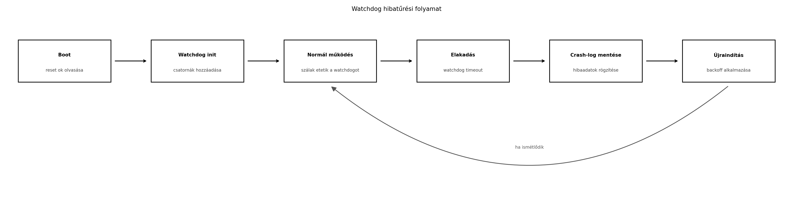

A TerraSense szenzorcsomópontja hosszú időn át, felügyelet nélkül fut
az üvegházban. Egyetlen elakadt szál – például egy megszakítás miatt
rosszul védett I2C-tranzakció vagy egy váratlan NULL
pointer miatti lefagyás – azt eredményezheti, hogy a csomópont nem küld
telemetriát, és a felhő nem látja, mi történik az adott node-on. A
hibatűrési mechanizmusok célja, hogy az eszköz felépüljön az ilyen
hibákból, és a felépülést nyomon lehessen követni a backendben. Ebben az
alfejezetben azt tanítjuk meg, hogyan kell watchdogot kötni a TerraSense
csomópont szálaihoz, hogyan kell kiolvasni és tárolni az újraindulás
okát, és hogyan kell elkerülni a végtelen újraindulási hurkot.
Definíció. A watchdog (őrkutya) egy olyan hardveres vagy szoftveres mechanizmus, amely meghatározott időn belül „etetést” (feed) vár el a felügyelt szoftvertől. Ha az etetés elmarad, a watchdog reseteli vagy újraindítja a rendszert.
Definíció. A reset ok (reset cause) az újraindulás kiváltó okát leíró érték, amelyet a boot során ki lehet olvasni a hardverből. A crash-napló (crash log) az újraindulás okán kívül a hiba kontextusát (pl. szálazonosító, programcounter, hibakód) rögzítő, nem felejtő memóriába mentett adat.
A Zephyrben két féle watchdog-ot is használhatunk:
wdt
API-ján keresztül érhető el; valós fejlesztőkártyán a devicetree-ben
kell engedélyezni.task_wdt szolgáltatása, amely kernel-szinten, szoftverből
figyeli az egyes szálakat. Minden felügyelt szálhoz egy-egy csatorna
tartozik, és a szálnak rendszeresen meg kell hívnia a
task_wdt_feed() függvényt a csatorna azonosítójával.A szoftveres watchdog előnye, hogy native_sim céllal is
futtatható, ezért a laborban ezt használjuk. A hardveres watchdog a
natív szimulációban nem elérhető, viszont éles hardveren mindig be kell
kötni, mert a szoftveres watchdog nem véd akkor, ha a teljes kernel
megáll.
A reset ok kiolvasása Zephyrben a hivatalos hwinfo
API-val történik: a <zephyr/drivers/hwinfo.h> fejléc
int hwinfo_get_reset_cause(uint32_t *cause) függvénye egy
bitmezőbe írja a reset okát. A vizsgálandó flagok például a
RESET_POR (power-on reset), a RESET_SOFTWARE
(szoftveres újraindítás) és a RESET_WATCHDOG (watchdog
által kiváltott reset). A hwinfo_clear_reset_cause() törli
a tárolt okot, hogy a következő boot ne lássa újra. Az API-t a
CONFIG_HWINFO Kconfig engedélyezi. Nem minden board – és a
native_sim sem feltétlenül – implementálja: ilyenkor a
függvény negatív hibakódot (-ENOSYS, -ENOTSUP)
ad, amit a kódnak kezelnie kell, és „ismeretlen” okot kell naplózni.
A Zephyr assert és fatal error handler mechanizmusai a
hibák korai észlelésére szolgálnak. A __ASSERT(cond, msg)
makró hibás feltétel esetén a kernel fatal error handlerét hívja meg. Az
alapértelmezett handler leállítja a rendszert, de saját függvénnyel
felülírható, hogy a hiba adatait előbb crash-naplóba írjuk, majd
sys_reboot()-ot hívjunk.
Újraindulási hurok akkor alakul ki, ha a hiba a boot után azonnal újra előjön, és az eszköz folyamatosan resetelek. A backoff (hátráló várakozás) lényege, hogy minden egymást követő hibás indulásnál egyre hosszabb ideig várakozunk, mielőtt újra megpróbálnánk a normál működést; ez időt ad a külső körülmények megváltozására (pl. rádiós zavar megszűnik), és csökkenti az energiafogyasztást.

A fenti ábra a teljes folyamatot mutatja: boot után kiolvassuk a reset okot, elindítjuk a watchdogot, normál működés közben a szálak etetik, ha elakadás történik, a watchdog timeout bekövetkezik, a crash-log elmentődik, majd újraindul a rendszer, és ha a hiba ismétlődik, a backoff egyre hosszabb várakozást iktat be.
| Szempont | Hardveres watchdog | Szoftveres (task) watchdog |
|---|---|---|
| Véd a teljes kernel lefagyása ellen | igen | nem |
| Véd egyetlen elakadt szál ellen | csak ha a szál eteti a hardveres watchdogot | igen, szálankénti csatornával |
Natív szimulációban (native_sim) futtatható |
nem | igen |
| Többlet erőforrásigény | minimális | egy kernel-timer és néhány bájt memória |
| Konfigurálhatóság | devicetree + Kconfig | Kconfig + futásidejű API |
| Tipikus használat | éles hardveren mindenképp | Robusztus szállalapú rendszerekben, teszteléshez |
A TerraSense csomópontban éles hardveren mindkettőt alkalmazzuk: a hardveres watchdog a teljes rendszer lefagyása ellen véd, a task watchdog pedig az egyes szálak elakadását figyeli. A labor a natív szimuláció miatt csak a task watchdogot mutatja be.
native_sim-enMunkakönyvtár:
mkdir -p ~/iot-labor/i019/src && cd ~/iot-labor/i019Ez a labor önálló demonstráció: üres Zephyr projektet hozunk létre,
és nem másoljuk át az Eszközszoftver-architektúra:
rétegek és állapotgépek forrásait. A watchdog-csatornák bekötése az
Eszközszoftver-architektúra: rétegek és
állapotgépek szolgáltatásszálaiba
(sensor_thread/comm_thread hurokba
task_wdt_feed(), az ERROR állapotban az etetés
leállítása) a labor kiegészítő feladata. A crash-rekord tartós
tárolásához az Eszközszoftver-architektúra: rétegek
és állapotgépek alfejezetben megismert settings/NVS beállításokat és
overlay-t használjuk.
Hozzuk létre a prj.conf, CMakeLists.txt és
boards/native_sim.overlay fájlokat.
prj.conf:
CONFIG_TASK_WDT=y
CONFIG_TASK_WDT_CHANNELS=4
CONFIG_PRINTK=y
CONFIG_REBOOT=y
CONFIG_HWINFO=y
CONFIG_SETTINGS=y
CONFIG_SETTINGS_NVS=y
CONFIG_NVS=y
CONFIG_FLASH=y
CONFIG_FLASH_MAP=y
CONFIG_FLASH_SIMULATOR=yboards/native_sim.overlay (mint az Eszközszoftver-architektúra: rétegek és
állapotgépek alfejezetben; a storage_partition nevét a
telepített kiadásban ellenőrizni kell):
/ {
chosen {
zephyr,settings-partition = &storage_partition;
};
};CMakeLists.txt:
cmake_minimum_required(VERSION 3.20.0)
find_package(Zephyr REQUIRED HINTS $ENV{ZEPHYR_BASE})
project(ts_node_i019)
target_sources(app PRIVATE src/main.c)A fő alkalmazás src/main.c tartalma:
#include <zephyr/kernel.h>
#include <zephyr/drivers/hwinfo.h>
#include <zephyr/sys/printk.h>
#include <zephyr/sys/reboot.h>
#include <zephyr/sys/util.h>
#include <zephyr/task_wdt/task_wdt.h>
#include <zephyr/settings/settings.h>
#define WORKER_STACK_SIZE 1024
#define FAULTY_STACK_SIZE 1024
#define WDT_TIMEOUT_MS 5000
K_THREAD_STACK_DEFINE(worker_stack, WORKER_STACK_SIZE);
K_THREAD_STACK_DEFINE(faulty_stack, FAULTY_STACK_SIZE);
static struct k_thread worker_thread_data;
static struct k_thread faulty_thread_data;
/* A crash-rekord: a watchdog-csatorna és az üzemidő a timeout pillanatában. */
struct crash_rec {
int32_t channel;
uint32_t uptime_ms;
};
static struct crash_rec pending_rec; /* a callback tölti ki */
static struct crash_rec loaded_rec; /* a boot során visszatöltött rekord */
static bool loaded_valid;
static struct k_work crash_work;
/* Settings handler: a "crash/last" kulcs visszatöltése a boot elején. */
static int crash_set(const char *key, size_t len,
settings_read_cb read_cb, void *cb_arg)
{
if (settings_name_steq(key, "last", NULL) && len == sizeof(loaded_rec)) {
if (read_cb(cb_arg, &loaded_rec, sizeof(loaded_rec)) ==
(ssize_t)sizeof(loaded_rec)) {
loaded_valid = true;
}
}
return 0;
}
SETTINGS_STATIC_HANDLER_DEFINE(crash, "crash", NULL, crash_set, NULL, NULL);
/* A flash-írás munkaszálban fut, nem a watchdog-callbackben. */
static void crash_work_fn(struct k_work *work)
{
ARG_UNUSED(work);
(void)settings_save_one("crash/last", &pending_rec, sizeof(pending_rec));
printk("Crash log saved: channel=%d, uptime_ms=%u\n",
(int)pending_rec.channel, pending_rec.uptime_ms);
/* Szoftveres újraindítás. native_sim-en a folyamat kilép,
* a watchdog-loop.sh indítja újra. */
sys_reboot(SYS_REBOOT_WARM);
}
static void watchdog_callback(int channel_id, void *user_data)
{
printk("Watchdog timeout on channel %d (%s), saving crash log...\n",
channel_id, (const char *)user_data);
/* A task_wdt callback időzítő-kontextusból futhat, ezért itt nem írunk
* flash-be: csak kitöltjük a rekordot, és munkaelemet ütemezünk. */
pending_rec.channel = channel_id;
pending_rec.uptime_ms = k_uptime_get_32();
k_work_submit(&crash_work);
}
static void worker_thread(void *p1, void *p2, void *p3)
{
int channel = POINTER_TO_INT(p1);
ARG_UNUSED(p2);
ARG_UNUSED(p3);
printk("Worker thread started, feeding channel %d...\n", channel);
while (1) {
task_wdt_feed(channel);
k_sleep(K_MSEC(1000));
}
}
static void faulty_thread(void *p1, void *p2, void *p3)
{
int channel = POINTER_TO_INT(p1);
ARG_UNUSED(p2);
ARG_UNUSED(p3);
printk("Faulty thread started, will now block forever...\n");
/* Egyszeri feed, utána elakadunk, így a watchdog lejár. */
task_wdt_feed(channel);
k_sleep(K_FOREVER);
}
int main(void)
{
uint32_t reset_flags = 0U;
int worker_ch;
int faulty_ch;
int ret;
k_work_init(&crash_work, crash_work_fn);
/* Az előző futás crash-rekordjának visszatöltése és jelentése. */
if (settings_subsys_init() == 0 && settings_load() == 0 && loaded_valid) {
printk("Boot: previous crash: wdt channel=%d uptime_ms=%u\n",
(int)loaded_rec.channel, loaded_rec.uptime_ms);
(void)settings_delete("crash/last");
}
ret = hwinfo_get_reset_cause(&reset_flags);
if (ret == 0) {
printk("Boot: reset cause flags = 0x%08x\n", reset_flags);
if ((reset_flags & RESET_WATCHDOG) != 0U) {
printk("Boot: previous reset was caused by the watchdog\n");
} else if ((reset_flags & RESET_POR) != 0U) {
printk("Boot: power-on reset\n");
} else if ((reset_flags & RESET_SOFTWARE) != 0U) {
printk("Boot: software reset\n");
} else {
printk("Boot: reset cause unknown (no flag set)\n");
}
(void)hwinfo_clear_reset_cause();
} else {
printk("Boot: reset cause unavailable: %d\n", ret);
}
/* Szoftveres watchdog inicializálása.
* A NULL paraméter azt jelenti, hogy nincs hardveres watchdog. */
ret = task_wdt_init(NULL);
if (ret != 0) {
printk("task_wdt_init failed: %d\n", ret);
return 0;
}
/* Két csatorna: a munkaszál és a hibás szál.
* A visszaadott azonosítókat eltároljuk, nem feltételezzük a 0/1 értéket. */
worker_ch = task_wdt_add(WDT_TIMEOUT_MS, watchdog_callback,
(void *)"worker");
if (worker_ch < 0) {
printk("task_wdt_add worker failed: %d\n", worker_ch);
return 0;
}
faulty_ch = task_wdt_add(WDT_TIMEOUT_MS, watchdog_callback,
(void *)"faulty");
if (faulty_ch < 0) {
printk("task_wdt_add faulty failed: %d\n", faulty_ch);
return 0;
}
printk("Watchdog running: worker channel %d, faulty channel %d\n",
worker_ch, faulty_ch);
k_thread_create(&worker_thread_data, worker_stack,
K_THREAD_STACK_SIZEOF(worker_stack),
worker_thread, INT_TO_POINTER(worker_ch), NULL, NULL,
K_PRIO_PREEMPT(8), 0, K_NO_WAIT);
k_thread_create(&faulty_thread_data, faulty_stack,
K_THREAD_STACK_SIZEOF(faulty_stack),
faulty_thread, INT_TO_POINTER(faulty_ch), NULL, NULL,
K_PRIO_PREEMPT(9), 0, K_NO_WAIT);
return 0;
}A kódban a két szál teljes k_thread_create hívással jön
létre, a K_THREAD_STACK_DEFINE által biztosított stackkel.
A task_wdt_add() által visszaadott csatornaazonosítót nem
feltételezzük 0-nak és 1-nek: a visszakapott értéket
INT_TO_POINTER-rel adjuk át a szálnak, amely
POINTER_TO_INT-tel olvassa vissza. Ha egy korábbi modul már
foglalt csatornát, a két új azonosító ettől eltér, és a watchdog
továbbra is a helyes csatornát figyeli. A faulty_thread
egyszer etet, majd K_FOREVER-rel elakad, így az 5
másodperces timeout lejár, és meghívja a callbacket.
A laborhoz tartozó watchdog-loop.sh szkript:
#!/bin/bash
# A binárist újraindítja, ha kilép, és növekvő backoffot alkalmaz.
cd ~/iot-labor/i019
for attempt in 1 2 3; do
echo "===== Attempt $attempt ====="
./build/zephyr/zephyr.exe --flash=i019_flash.bin
rc=$?
echo "Exited with code $rc"
sleep $((attempt * 5))
doneBuild és futtatás:
cd ~/iot-labor/i019
west build -b native_sim .
chmod +x watchdog-loop.sh
./watchdog-loop.shVárt kimenet (illusztratív, rövidítve):
===== Attempt 1 =====
Boot: reset cause unavailable: <hibakód>
Watchdog running: worker channel 0, faulty channel 1
Worker thread started, feeding channel 0...
Faulty thread started, will now block forever...
Watchdog timeout on channel 1 (faulty), saving crash log...
Crash log saved: channel=1, uptime_ms=<érték>
Exited with code N
===== Attempt 2 =====
Boot: previous crash: wdt channel=1 uptime_ms=<érték>
Boot: reset cause unavailable: <hibakód>
...A második próbálkozás első sora mutatja, hogy a crash-rekord a
settings-ben (a --flash fájlban) túlélte az
újraindítást. Tiszta első futáshoz a i019_flash.bin fájlt
előtte nevezd át vagy mozgasd el. A kimenet illusztratív, nem futtatott:
a hwinfo_get_reset_cause() eredménye board- és
szimulációfüggő. A native_sim nem feltétlenül szolgáltat
valódi reset-okot, ezért ott a „reset cause unavailable” ág futhat;
ilyenkor a labor a watchdog működését mutatja meg, nem a hardveres reset
diagnosztikáját. Valós hardveren (például nRF52840 DK-n) a
watchdog-reset után a RESET_WATCHDOG flag jelenik meg. A
kilépési kód (N) szintén platformfüggő, mert a
native_sim a sys_reboot-ot jellemzően a
folyamat leállításával valósítja meg; a watchdog-loop.sh
ezért nem a kód konkrét értékére, hanem a folyamat kilépésére reagál. A
csatornaszámok a task_wdt_add() visszatérési értékei; a
fenti 0 és 1 csak akkor jelenik meg, ha előttük más nem foglalt
csatornát.
Továbbvitt eredmény. A reset ok és a watchdog
timeout logolása a boot üzenetben, valamint a kilépési kód alapján a
watchdog-loop.sh által kiírt
Exited with code N sor a későbbi megfigyelhetőségi Megfigyelhetőség végponttól végpontig: metrikák,
naplók, nyomkövetés és flottakezelési Flottakezelés: nyilvántartás, konfiguráció, állapot
alfejezetekben felhasználható: a gateway vagy a backend ebből az
eseményből riasztást generálhat, ha egy node ismétlődő watchdog-resetet
szenved.
| Hibatünet | Lehetséges ok | Javítás |
|---|---|---|
A watchdog nem indul el, a task_wdt_init hibát ad |
CONFIG_TASK_WDT nincs engedélyezve |
prj.conf-ban add hozzá a CONFIG_TASK_WDT=y
sort |
| A watchdog timeout sosem következik be | A hibás szál is rendszeresen etet, vagy a K_FOREVER nem
blokkol |
Ellenőrizd, hogy a faulty_thread csak egyszer etet, és
utána valóban K_FOREVER-t hív |
A hwinfo_get_reset_cause() -ENOSYS vagy
-ENOTSUP hibát ad |
A board vagy a native_sim nem implementálja a reset-ok
lekérdezését |
Kapcsold be a CONFIG_HWINFO=y beállítást, és kezeld a
hibát „ismeretlen” okként; valós hardveren ellenőrizd, hogy a board
támogatja-e a hwinfo API-t |
A native_sim processz nem lép ki a
sys_reboot után |
A natív implementáció a folyamatot állítja le vagy újraindítja, nem hardveres resetet hajt végre | A watchdog-loop.sh kezelje a kilépést; ne a kilépési
kód konkrét értékére, hanem a naplóüzenetre alapozz |
settings vagy közvetlen flash-írás szükséges a
túléléshez.Magyarázd el, mi a különbség a hardveres és a szoftveres watchdog között, és miért nem véd a szoftveres watchdog a kernel teljes lefagyása ellen?
A TerraSense csomópontjában a telemetria-szál 10 másodpercenként küld adatot. Tervezd meg a watchdog csatornák számát és az etetési periódusokat, ha a következő szálak futnak: telemetria, szenzorolvasás, parancsfeldolgozás, hálózati stack. Indokold, miért nem elegendő egyetlen csatorna.
Egészítsd ki a labor main.c-jét úgy, hogy a
hwinfo_get_reset_cause() által adott flagmezőt egy
reset_flags nevű globális változóba mentse, és ha a
RESET_WATCHDOG flag be van állítva, készítse elő a
{"reset_reason":"watchdog"} JSON payloadot a
terrasense/gh1/n001/state topic számára, majd naplózza azt.
A tényleges MQTT-publikálást még ne valósítsd meg: az MQTT-klienst az MQTT a gyakorlatban: Zephyr-kliens és Mosquitto
alfejezet vezeti be, erre a laborra tehát még nem támaszkodhat.
A tesztelés során a node folyamatosan újraindul, de a
hwinfo_get_reset_cause() nem ad egyértelmű okot: vagy
hibakóddal tér vissza, vagy egyetlen flag sincs beállítva. Mi lehet a
hiba, és hogyan derítenéd ki, hogy a watchdog vagy valamilyen más ok
okozza-e az újraindulást? Adj lépésről lépésre hibakeresési tervet.
A hardveres watchdog egy dedikált periféria, amely a CPU resetvonalát
vezérli; ha a szoftver nem eteti, a hardver közvetlenül reseteli a
processzort. A szoftveres watchdog ezzel szemben a kernel egy
szolgáltatása (pl. Zephyr task_wdt), amely kernel-timerrel
ellenőrzi az etetéseket. Ha a kernel teljesen lefagy, a szoftveres
watchdog is lefagy, mert a kernel nem tudja futtatni a timert. A
hardveres watchdog ekkor is működik, mert a CPU-tól független
periféria.
Négy szálhoz négy csatornát érdemes rendelni
(CONFIG_TASK_WDT_CHANNELS ≥ 4). Szabály: a csatorna
timeoutja legyen legalább a szál leghosszabb hurokideje kétszerese, az
etetés pedig a hurok minden lefutásakor történjen (a 10 s-onként lefutó
szál nem etethet 5 s-onként, hacsak a várakozását nem darabolja).
Javasolt értékek:
| Szál | Hurokidő | Timeout | Etetési pont |
|---|---|---|---|
| Telemetria | 10 s | 20–30 s | a hurok végén, minden küldési kísérlet után |
| Szenzorolvasás | 5 s | 10–15 s | minden sikeres vagy hibás olvasás után |
| Parancsfeldolgozás | k_msgq_get 1 s timeouttal |
5 s | minden k_msgq_get visszatérése után (timeout esetén
is) |
| Hálózati stack | – | pl. 60 s | a Zephyr belső szálát nem tudjuk etetni; a comm-szál eteti egy sikeres hálózati művelet (pl. PINGRESP) után |
Egyetlen csatorna nem elegendő, mert ha az egyik szál elakad, de a
többi eteti a közös csatornát, a watchdog nem érzékeli az elakadást. A
szálankénti csatorna lehetővé teszi, hogy pontosan az elakadt szálat
azonosítsuk a callback channel_id paraméteréből.
A main.c-ben:
#include <zephyr/drivers/hwinfo.h>
#include <zephyr/sys/printk.h>
#include <stdbool.h>
static uint32_t reset_flags;
static bool reset_was_watchdog;
int main(void)
{
int ret = hwinfo_get_reset_cause(&reset_flags);
if (ret == 0) {
reset_was_watchdog = (reset_flags & RESET_WATCHDOG) != 0U;
printk("Boot: reset flags = 0x%08x\n", reset_flags);
(void)hwinfo_clear_reset_cause();
} else {
printk("Boot: reset cause unavailable: %d\n", ret);
}
/* ... watchdog init ... */
if (reset_was_watchdog) {
const char *payload = "{\"reset_reason\":\"watchdog\"}";
printk("state payload for terrasense/gh1/n001/state: %s\n", payload);
}
}A payload előállítása és naplózása önállóan működik. A
terrasense/gh1/n001/state topicra való publikálást az MQTT a gyakorlatban: Zephyr-kliens és Mosquitto
alfejezetben bevezetett MQTT-klienssel lehet hozzáadni; így ez a labor
nem függ egy későbbi fejezet függvényétől. A reset_flags
flagmező, ezért a watchdog-ot nem == összehasonlítással,
hanem bitmaszkkal kell vizsgálni.
A folyamatos újraindulás és a hiányzó reset-ok arra utal, hogy a
hwinfo API-t vagy nem támogatja a board/szimuláció, vagy a
reset oka nem különböztethető meg a rendelkezésre álló flagokkal.
Hibakeresési terv:
watchdog-loop.sh kimenetén a
naplóüzeneteket; a „Watchdog timeout on channel …” sor egyértelműen a
watchdogra utal, a kilépési kód önmagában nem.task_wdt_add()-nak átadott
watchdog_callback() elején és a sys_reboot()
hívás előtt, valamint írj saját
k_sys_fatal_error_handler()-t, amely a fatal error okát
(reason) naplózza; így elkülöníthető a watchdog-, a fatal
error- és a külső reset.hwinfo_get_reset_cause()
által adott flagmezőt; ott a hardveres watchdog
RESET_WATCHDOG flaget ad.hwinfo_get_reset_cause() továbbra is hibát ad,
használj egy külső logoló rendszert (például host-oldali naplót), hogy
lásd, mi okozza a kilépést, és a board dokumentációjában keresd a
reset-ok támogatását.Ebben az alfejezetben a TerraSense csomópont hibatűrését tanítottuk.
Bekötöttük a Zephyr szoftveres (task) watchdogját, amely szálankénti
csatornákkal figyeli a futó szálakat, és elakadás esetén
sys_reboot-ot hív. Megmutattuk a reset ok kiolvasását a
hwinfo_get_reset_cause() függvénnyel, a flagmező
vizsgálatát és a crash-napló tartós tárolásának szükségességét. A
laborban natív szimulációban idézhető elő szándékos elakadás, amelyet a
watchdog-loop.sh növekvő backoffal indít újra. A továbbvitt
eredmény: a boot üzenetben megjelenő reset-flag és a watchdog-timeout
naplója alapján a későbbi megfigyelhetőségi és flottakezelési
alfejezetek riasztást generálhatnak. A kód a
~/iot-labor/i019/src/main.c, a konfiguráció a
prj.conf, a futtató szkript pedig a
watchdog-loop.sh.
task_wdt_init,
task_wdt_add, task_wdt_feed) a 3.7.0 LTS
dokumentációban; a csatornaazonosítót a task_wdt_add()
visszatérési értékeként kell kezelni, nem szabad 0/1 értéket
feltételezni.hwinfo_get_reset_cause() és a
hwinfo_clear_reset_cause() a
<zephyr/drivers/hwinfo.h> fejlécben érhető el,
CONFIG_HWINFO engedélyezésével; a native_sim
és az egyes boardok támogatása eltér, ezért a hibakódot kezelni
kell.native_sim sys_reboot-viselkedése
(kilépés vagy újraindítás, kilépési kód) a Zephyr kiadásától függ; a
fejezet kódját statikusan ellenőriztük, futási eredményt nem
mértünk.